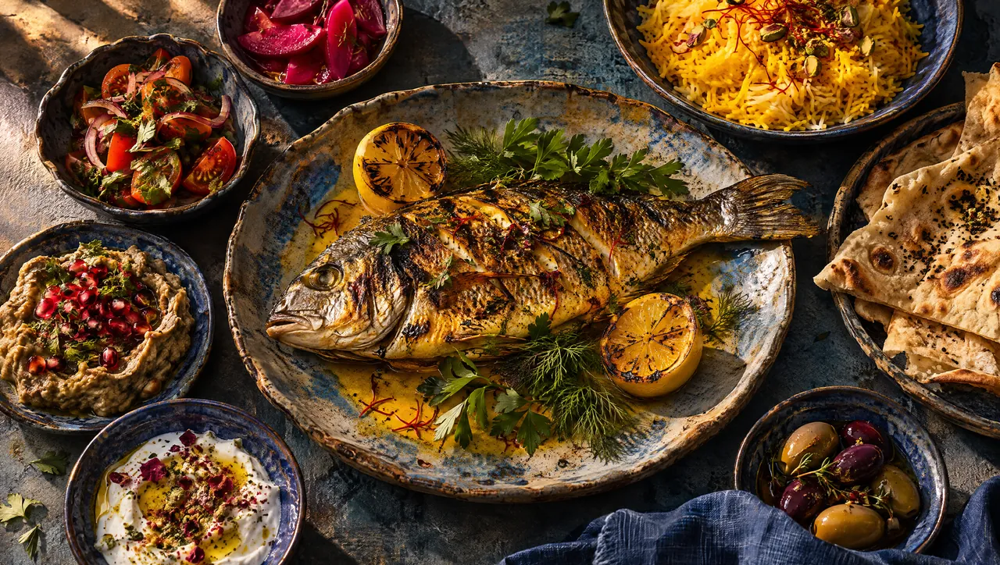
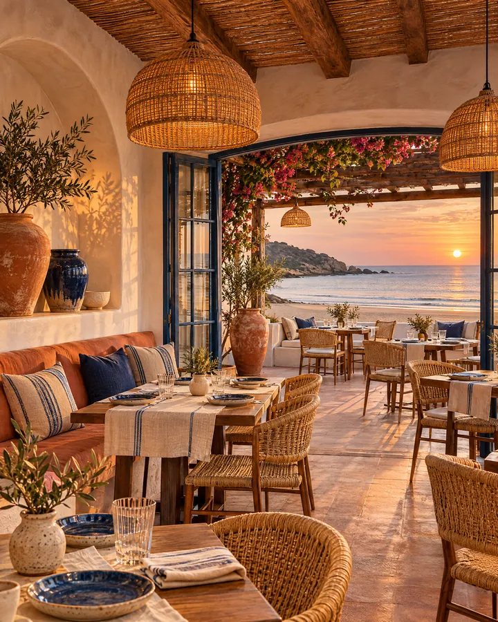
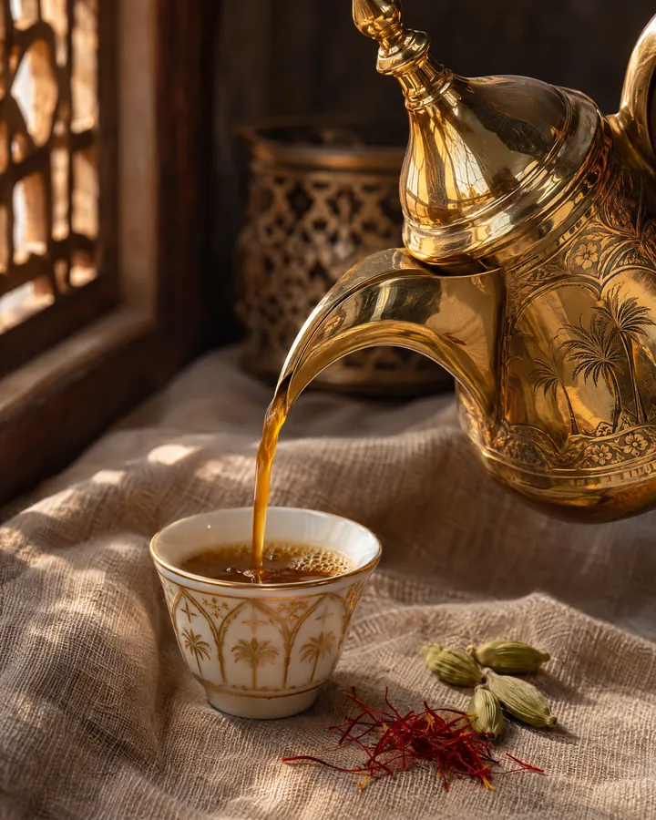

Coastal kitchen & café
Fire, sea
& saffron.
Fish from the morning boats, cooked over coals and finished with saffron butter. Coffee from seven, dinner until late.


Reservations
Your table at sunset.
Choose a day, a time and how many of you are coming. We hold terrace tables for fifteen minutes.
Day
Time
Guests
Demo booking: this is a concept website, so no reservation is made.

The coffee bar
Mornings start with cardamom.
Gahwa poured from the dallah, karak brewed slow, and fresh pastries until noon.
- Coffee bar7:00 – 12:00
- Lunch12:00 – 16:00
- Dinner18:00 – late